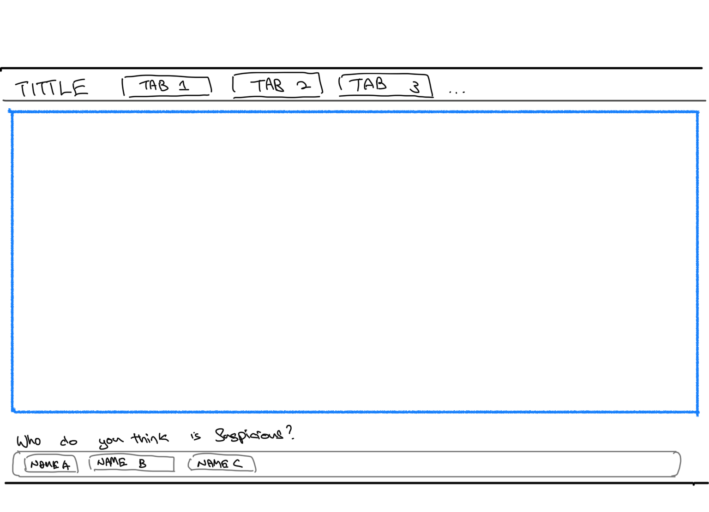

Where it all started.
The goal of the annual Institute of Electrical and Electronics Engineers (IEEE) Visual Analytics Science and Technology (VAST) Challenge is to advance the field of visual analytics through competition. The 2021 IEEE VAST Challenge brings back a classic challenge from 2014 to see how approaches and techniques have developed since the original release of the challenge. The background of the challenge is as below:
In the roughly twenty years that Tethys-based GAStech has been operating a natural gas production site in the island country of Kronos, it has produced remarkable profits and developed strong relationships with the government of Kronos. However, GAStech has not been as successful in demonstrating environmental stewardship.
In January, 2014, the leaders of GAStech are celebrating their new-found fortune as a result of the initial public offering of their very successful company. In the midst of this celebration, several employees of GAStech go missing. An organization known as the Protectors of Kronos (POK) is suspected in the disappearance, but things may not be what they seem.
We found suspicious activities within GAStech itself worth investigating, thus, this project aims to create an data analytics applications to visualize these suspicious activities and relationships for you to judge, who exactly are the suspicious people in GASTech.
This project aims to understand better the individuals and organizations that are involved in this situation. We do this by exploring the following:
We will do so by delivering an R-Shiny app that achieve the following through an interactive user interface design: * Identifying any anomalous or suspicious behavior. * Identifying formal (work-related) or informal (non-work related) relationships. + Discover any associations based on common interest given in the data. + Discover relationships between CC expenditure [MC2] and email headers + employee records [MC1] * Decide who are the suspicious GASTech employees * Obtaining a holistic profile on these suspicious employees
We’ll be using data sets from Mini-Challenge 1 [MC1] and Mini-Challenge 2 [MC2].
From [MC1], we will be using the email headers and employee records data. From [MC2], we will be extracting insights based on credit card transactions data.
We will also be joining the two data sets based on individuals to analyzing attributes by features across data sets.
Our scope and methodology is as below:
knitr::include_graphics("img/1_layout.png")